Module 1 — Échauffement (8 min : elliptique, mobilité, activation, geste technique)
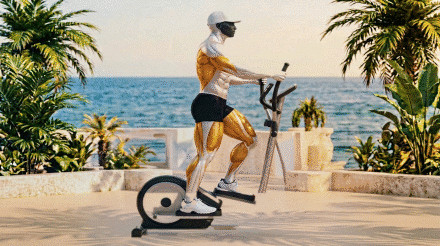
- 4 min à allure facile : dos droit, épaules relâchées, pieds posés à plat et cadence régulière. Vous devez pouvoir parler.
- Décor E1 unifié par composite (plaque de fond unique), sol_dom 219 = valeur approuvée le 16/10 pour l'elliptique intégré.
- RÉSERVE À VALIDER : la phase avant (pose 3 corrigée mains) montre encore un petit manchon noir près de la console — à faire sauter si vous choisissez ce candidat.
- Mêmes recommandations que 1a. Aucun artefact : seulement deux phases (arrière ↔ passage), donc mouvement de balancier, pas de foulée complète.
- Choix de repli si le manchon du candidat B est refusé.
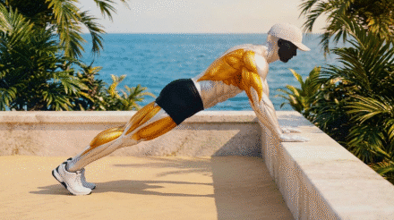
- Mains sur un support stable, bras tendus : 2 × 8 pompes scapulaires, omoplates rapprochées puis écartées sans plier les coudes.
- Mesuré CONFORME : sol_dom 228-229, saturation 37-38, lime ≤ 0,01 %, muscles dorés 7,5-8,4 %.
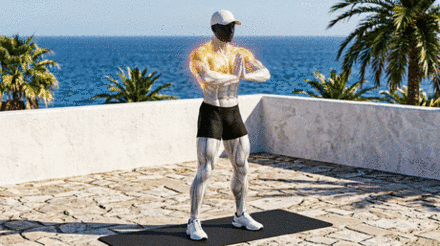
- Bras devant la poitrine : ouvrez puis croisez 8 fois, puis 8 cercles d'épaules lents.
- Déjà approuvé et intégré le 13/10 — non régénéré (règle : un média conforme ne se régénère pas).
Module 2 — Étirement · lot 1 (pec, dos, lombaires)
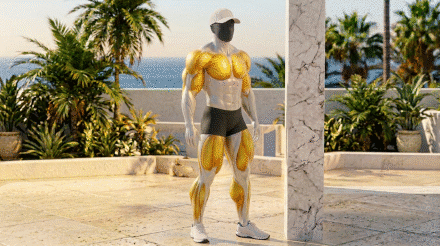
- Appui à hauteur d'épaule, coude ~90°, thorax incliné vers l'avant, abdos engagés, 30-45 s.
- Mesuré : sol 227-234, saturation 37-39, mer 2,2-2,7 % (plage acceptable 2,3-2,9 après contrôle visuel : mer présente au fond).
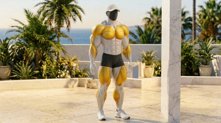
- Bras tendu à hauteur d'épaule, paume au montant, rotation du tronc opposée à l'appui, épaule basse, 30 s par côté.
- 4 clés (face → bras posé → demi-rotation → rotation complète) ; colonne mesurée alignée au pixel près sur les 4 clés.
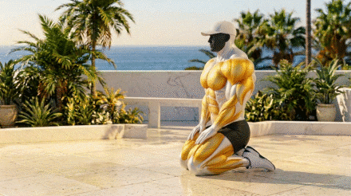
- Genoux au sol, hanches vers les talons, bras tendus devant, front vers le sol, respiration dans le dos, 30-45 s.
- Mesuré CONFORME : sol 228-235, saturation 42-44, lime ≤ 0,06 %.
Module 2 — Étirement · lot 2 (dos, lombaires, épaule avant)
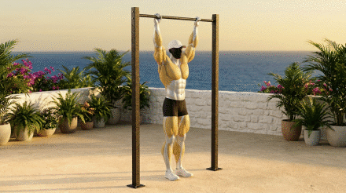
- Prise un peu plus large que les épaules, coudes tendus, corps gainé, 20-30 s.
- Mesuré CONFORME après réétalonnage du sol sablé : sol_dom 235, saturation 42, lime 0 %.
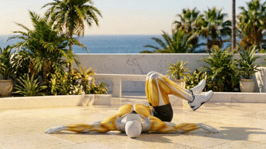
- Épaules au sol, genoux groupés basculés d'un côté, regard opposé, 30 s par côté.
- Mesuré CONFORME 7/7 images : sol 234, saturation 40,6, lime ≤ 0,06 %.
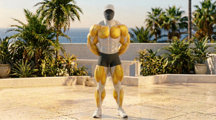
- Doigts entrelacés derrière le dos, bras tendus et éloignés du dos, poitrine ouverte, épaules basses, 30 s.
- Mer 2,4-2,5 % : dans la plage acceptable 2,3-2,9 après contrôle visuel (mer visible au fond).
Module 2 — Étirement · lot 3 (épaule latérale, épaule postérieure, biceps)
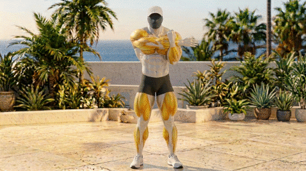
- Bras horizontal à hauteur de poitrine, avant-bras opposé en crochet, traction vers le corps, épaule basse, 30 s par côté.
- Sol 228-242 (dans la bande 219-253), saturation 39-40, mer 2,6-2,7 % (plage acceptable après contrôle visuel).
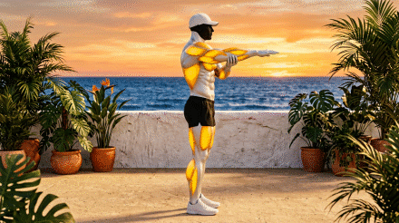
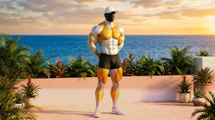
Module 2 — Étirement · lot 4 (triceps, taille, hanche)
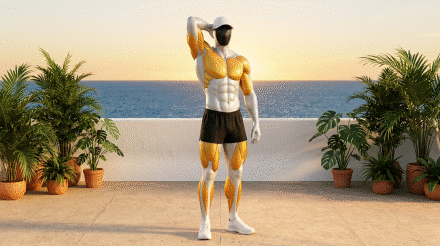
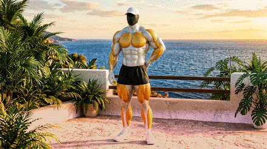
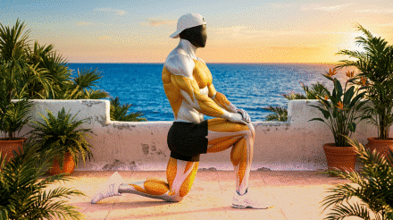
Module 2 — Étirement · lot 5 (poignets, dos, hanches)
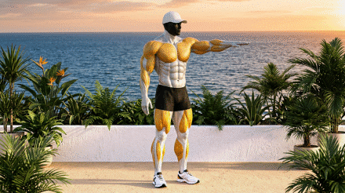
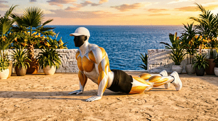
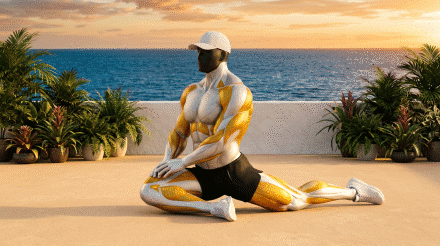
Module 2 — Étirement · lot 6 (quadriceps, chaîne latérale, ischio-jambiers)
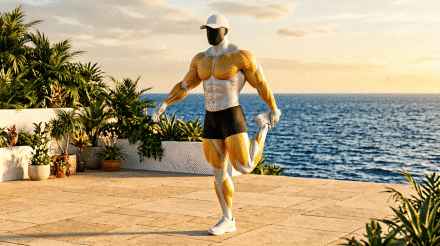
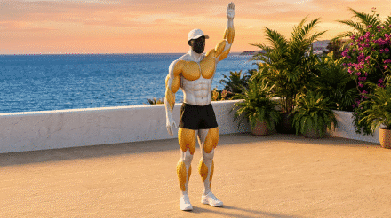
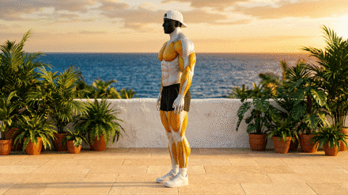
Module 2 — Étirement · lot 7 (ischios au sol, adducteurs, mur)
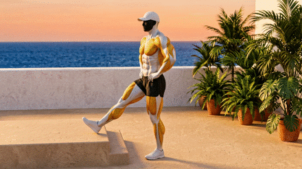
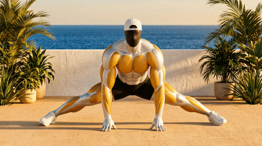
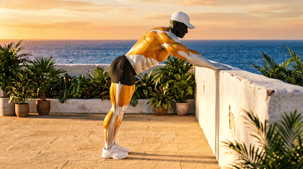
Module 2 — Étirement · lot 8 (mollets)
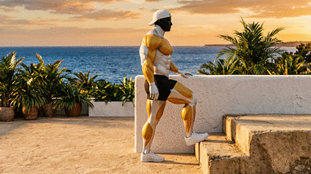
En production (prochains lots, non encore présentés)
visuel en production — entrée ajoutée dès ses clés contrôlées
- Placeholder : chaque visuel restant aura sa propre entrée dès ses clés validées en interne (contrôle visuel + verifier-pose).
- Cadence : 10 générations d'images maximum par tour de travail — la production se poursuit tour après tour.